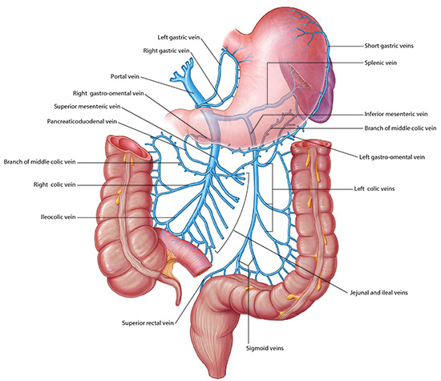

Stomach, Liver, Spleen: Module 2 - Page 4 of 7
|  |
| Click on image to enlarge |
| Add the left gastric vein. | |
| Add the right gastric vein. | |
| Add the short gastric veins. | |
| Add the left and right gastroepiloic veins. |
Why is it important to understand this drainage area? |
|
|
If the portal drainage into the liver is obstructed, the blood flow backs up and causes portal hypertension. The only drainage for the system is to find collateral drainage into the systemic venous system. This occurs via the connection of the left and right gastric veins to the azygos vein. |
|
Increasing pressure and flow in the azygos vein leads to what structural change in the esophagus? |
|
|
Esophageal varicies. |
|